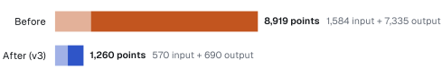
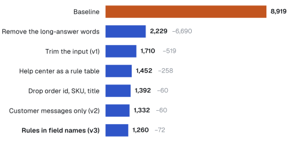
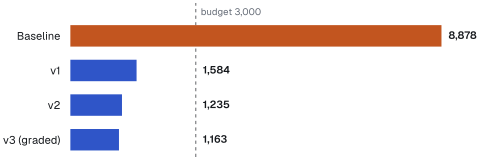
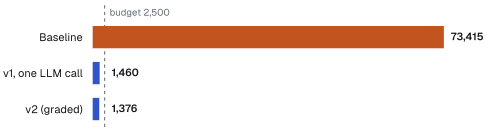

Paying for fewer tokens
How I cut an LLM support bot's cost per ticket by 87% and 98% without changing a single answer, and why I stopped where I did.

ShopAssist is a Tier-1 support copilot for an online shop. For every ticket it reads the customer's message and the order, picks one of four actions (REFUND, REPLACE, SEND_ARTICLE or ESCALATE_TIER2) and cites the help-center article that backs the decision.
The assignment gave me two working versions of that bot. Both already answered every ticket correctly. My job was to keep it that way and make each ticket much cheaper: at most 3,000 points for Question 1, which uses a single LLM call, and at most 2,500 for Question 2, a four-step pipeline.
On average, Question 1 now costs 1,163 points per ticket instead of 8,878, and Question 2 costs 1,376 instead of 73,415. Every ticket still gets the same answer, and all 23 tests pass.
First, read the bill
Before changing any code, I looked at how a call is charged. Every prompt token costs 3 points and every answer token costs 15. There's a cheaper cached rate, but it only applies when the same prompt start of at least 1,024 tokens repeats.
points = uncached_input × 3 + cached_input × 0.3 + output × 15
shared/billing.py.Then I read the model code. It's a local simulator, and two details in it ended up mattering more than anything else.
The first is a list of phrases: step by step, full reasoning, double-check, restate the ticket, quote the and detailed plan. If any of them appears in the prompt, the simulator writes about 490 tokens instead of about 40. At 15 points a token, that's roughly 6,700 extra points on every call.
The second is a floor. Every call returns a short JSON of 36 to 46 tokens, so each LLM call costs at least 540 to 690 points, however good the prompt is.
So the plan was simple. Never use those phrases, send less input, and make as few calls as possible.
Question 1: one call, 8,919 points
On ticket T-1001 the original prompt cost 8,919 points, and 82% of that was the answer. The cause was one sentence in the system prompt: Think step by step. Write full reasoning, quote any article you rely on, then output JSON. It contains two of the six trigger phrases.
Deleting that sentence took the ticket from 8,919 to 2,229 points. Then I cut the waste in the input: a random run id in every prompt, few-shot examples that repeated the rules, article ids printed twice, and indented JSON. That got it to 1,710. This was v1, already well inside the 3,000 budget.
After v1 the answer was a fixed 46 tokens, so only the input could shrink. For v2 I rewrote the five help articles as a small rule table, dropped the order fields no rule reads (order id, SKU and title), and sent only the customer's own messages. For v3 I wrote each rule in the order data's own field names, like delivered_days_ago<=7 REPLACE. That's shorter, and I think it's harder for a model to misread than "delivered 7 or fewer days ago".

This is everything v3 sends for that ticket, 190 tokens in total:
SYSTEM: First match wins, else ESCALATE_TIER2. JSON only: action,kb_article,customer_reply (1 sentence). subscription-cooling-off: subscription_age_days<=30 REFUND else SEND_ARTICLE digital-license-no-refund: license_revealed SEND_ARTICLE custom-items-no-replace: customized+damage_reported ESCALATE_TIER2 damage-replacement-7-days: damage_reported, delivered_days_ago<=7 REPLACE returns-within-30-days: physical, !opened, delivered_days_ago<=30 REFUND USER: CUSTOMER: Hi, I'd like a refund for the wireless headphones. They arrived 10 days ago and I never opened the box. ORDER_SNAPSHOT: {"product_type":"physical","delivered_days_ago":10,"opened":false,"license_revealed":false,"customized":false,"damage_reported":false} END_SNAPSHOT

Question 2: four calls that didn't need to be
Question 2 runs the same decision through four steps: triage, retrieve, compose and audit. In the original, every step was an LLM call, and two of them re-read up to 120,000 characters of a help center more than 210,000 tokens long. One ticket cost about 73,400 points.
When I opened that help center, 99.9% of it was filler. The real policy is the same five short articles as in Question 1, about 155 tokens. The rest is one internal routing note repeated over and over, and the note itself says it doesn't change any policy.

Then I did the arithmetic. Even with tiny prompts, four LLM calls spend at least 4 × 540 = 2,160 points on output alone. That's 86% of the 2,500 budget before a single prompt token is counted.
I also checked whether an LLM triage step could pay for itself by sending compose fewer articles. Here it can't. The call would cost about 1,000 points and save about 360. It only starts paying off above roughly 330 tokens of real policy per ticket, and this whole help center has 155.
So I kept all four steps, in the same order, and let only one of them call the LLM. Triage is now code that builds a short brief of the ticket. Retrieve is code that pulls the five policy articles out of the help center and skips the filler. Compose is the one LLM call, and it makes the decision. Audit is a code check: it accepts the answer only if the action is one of the four allowed and the article is one that retrieve returned. Anything else goes to a human.
| Step | Before | After | What changed |
|---|---|---|---|
| triage | 32,718 | 0 | Now code. Used to re-read 120k characters of help center. |
| retrieve | 2,352 | 0 | Now code. Used to ask the LLM to print the articles. |
| compose | 10,929 | 1,305 | The only LLM call left: 255 tokens in, 36 out. |
| audit | 27,489 | 0 | Now code. Rejects go to a human. |
| total | 73,488 | 1,305 | 4 LLM calls before, 1 after. |
That was v1 for Question 2, at 1,389 to 1,557 points per ticket. v2 makes two small cuts to the one remaining call. It strips Markdown bold from the retrieved articles, so the words stay and only the asterisks go, and it shortens the instruction to a compact list of actions. That saves another 84 points on every ticket.

What I chose not to do
I could have reported lower numbers. I measured four more ideas and shipped none of them. Two only looked cheaper because of how the simulator works, one cost more than it saved, and one would go stale.
| Idea | Points | Why not |
|---|---|---|
| Pad prompts for the cache price | −45 to −116 | Only fools the simulator |
| Send only the top 2 articles | −270 | Drops the right article; tests still pass |
| Add an LLM triage step | +640 | Costs 1,000 to save 360 |
| Hand-written rules in Q2 | −250 | Goes stale when articles change |
The top-2 test taught me the most. The simulator picks its answer from the order data and never looks at the articles. So when the correct article was missing from the prompt, it still answered correctly, and every test still passed. A real model only knows what's in its prompt, so it could easily get those tickets wrong.
With the correct article missing from the prompt, every test still passed.
That's why I stopped where I did. Any saving past this point was one the tests had no way to check.
How I know it works
All 23 tests pass, for every version that's still in the code. They check the action and the article on every public ticket and on the hidden T-1091, and they check that each ticket stays within budget: 3,000 points for Question 1 and 2,500 for Question 2.
A few tests guard the shortcuts I took. One feeds the audit step a broken reply, an unknown action and a made-up article, and checks that each one goes to a human. One scans every prompt for the trigger phrases. One checks that Question 1's rule table has exactly one rule per help article, so it can't drift from the help center unnoticed. The last one checks that each version is cheaper than the one before it on every public ticket.
What I'd take to the next LLM project
Read the bill before touching the prompt. Answer tokens cost five times as much as prompt tokens here, and the biggest single saving, 6,690 points on one ticket, came from deleting one sentence that asked for reasoning.
Count the calls, too. Every call has a minimum cost, and a step that only formats, looks something up or checks an answer doesn't need a model.
And be suspicious of a saving your tests can't check. Some of the cheapest numbers I found were cheap only because the test setup couldn't see what they broke.